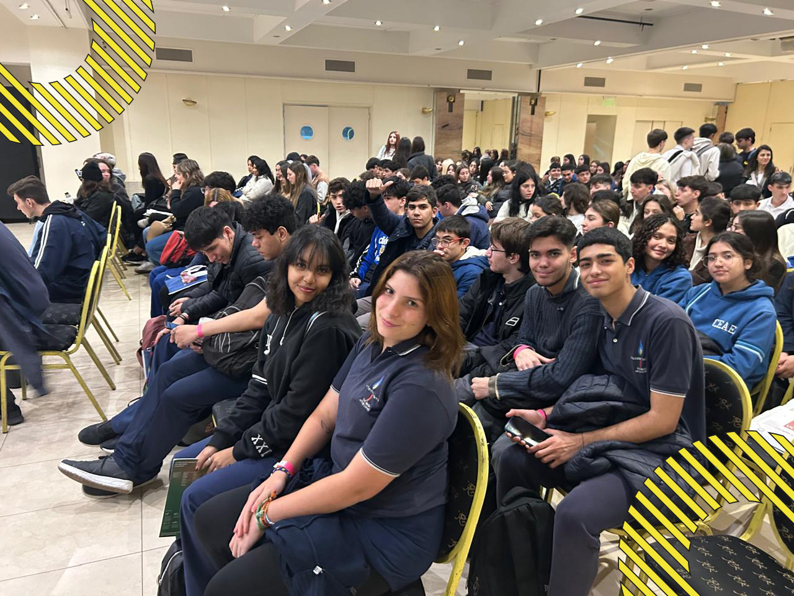

Al principio se trató de un salon de eventos por el cual podíamos recorrer de manera libre e independiente, decidiendo cada alumno a que puesto universitario ir, ya sea para retirar un folleto de la carrera que les interese o para dejar datos personales como: Nombre, Apellido, Número telefónico, Nuestro Gmail personal, el nombre de nuestro colegio y por último la carrera por la cual estamos más interesados. Algunas de las universidades que se encontraban en este evento fueron: Ditella, ICBC, UBA, UCA, IMAGE, OTT, UADE, ESF, SIGLO 21, etc. Al mismo tiempo que debías acercarte a un puesto donde te entregaban una pulsera que te daba el permiso de ingresar al auditorio que desees, en cada auditorio se hablaron distintos temas y en el caso del espíritu santo nos tocó el auditorio b en donde dieron charlas TED y una charla Psicológica. . Posterior a las distintas charlas otorgadas por la doctora en psicología Natalia, y la segunda dando una charla Ted llamada Anggie Salazar, volvimos al salón de eventos donde nos despedimos todos y compartimos una pequeña idea sobre la experiencia.
